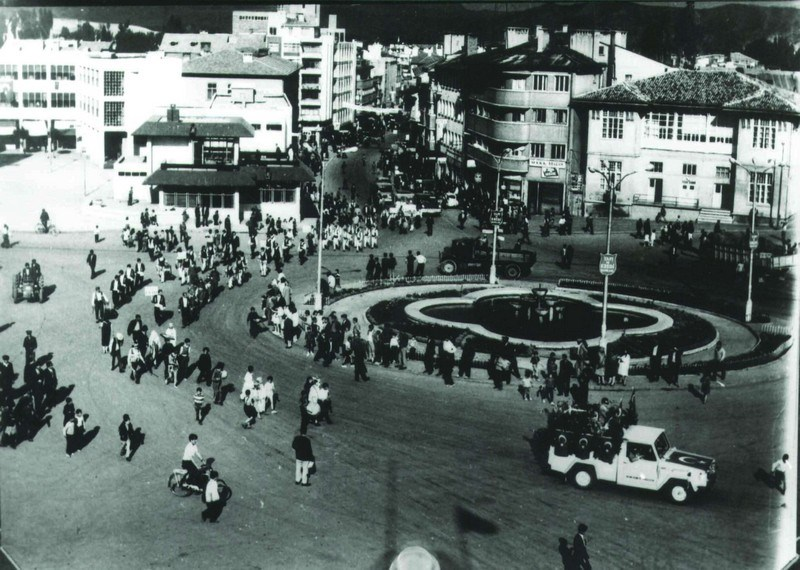

| YIL |
SİVAS NÜFUSU |
ERKEK NÜFUSU |
KADIN NÜFUSU |
| 2019 |
639.000 |
320.000 |
319.000 |
| 2018 |
646.000 |
323.000 |
323.000 |
| 2017 |
621.000 |
309.000 |
311.000 |
Bu tablo sadece html elementleri kullanılarak oluşturulmuştur. Görsellik CSS ile kendimiz yazarak
verilmiştir. Bu da bir sub etiketi örneğidir.
ESKİ SİVAS FOTOĞRAFLARI

SİVAS'IN İLÇELERİ
- Akıncılar
- Altınyayla
- Divriği
- Doğanşar
- Gemerek
- Gölova
- Gürün
- Hafik
- İmranlı
- Kangal
- Koyulhisar
- Merkez
- Suşehri
- Şarkışla
- Ulaş
- Yıldızeli
- Zara
olmak üzere 17 ilçesi vardır.
Sivas'ın bazı müzeleri
- Sivas Atatürk ve Kongre Müzesi
- Sivas Arkeoloji Müzesi
- Sivas Etnoğrafya Müzesi